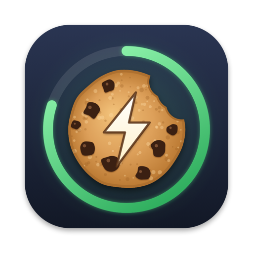
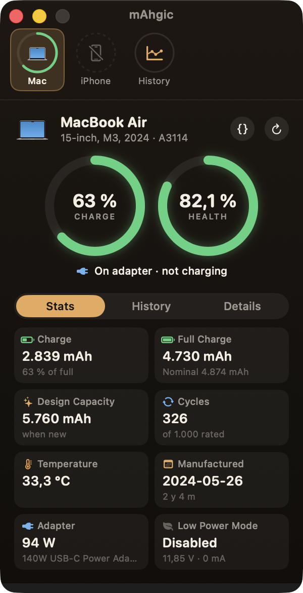
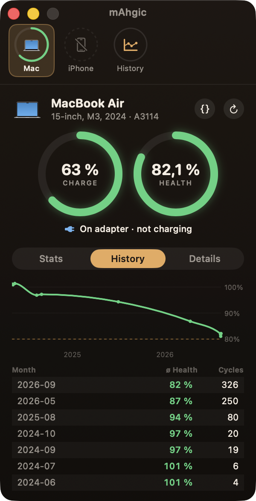

Real battery health
See how much your battery can still hold compared to the day it was new.

mAhgicBatteries get tired. mAhgic shows you exactly how tired – for your Mac, and for your iPhone and iPad too. Free, tiny, and nothing leaves your Mac.

Percent tells you how full the battery is right now. mAhgic tells you how big it still is.
See how much your battery can still hold compared to the day it was new.
Your iPhone and iPad show up by themselves when they're on the same Wi‑Fi as your Mac.
How often the battery has been charged all the way, and how many cycles it's made for.
Watts going in or out, time until full or empty, the power adapter and the temperature.
mAhgic keeps a diary of every battery, month by month. Bring your coconutBattery history along.
No account, no cloud, no tracking. Everything is saved on your Mac only.
Here's one MacBook Air, measured with mAhgic over two years:
Below 80% Apple recommends a battery service. mAhgic shows you when you're getting close – long before your Mac starts dying at lunchtime.
Charge, health, cycles, temperature and power at a glance.

A chart and a list for every month, so you see the trend.
Set it up once. After that your iPhone and iPad just appear in mAhgic.
Connect the iPhone by cable and tap “Trust this Computer”.
In Finder, click the iPhone and turn on “Show this iPhone when on Wi‑Fi”.
Whenever both are on the same Wi‑Fi, mAhgic shows the iPhone's battery.
Our iPhone 16 Pro showed up in 0.3 seconds – at 103% health. New batteries often start a bit above 100%.
mAhgic isn't checked by Apple yet. Try opening it once, then go to System Settings → Privacy & Security and click “Open Anyway”. You only do this once.
Macs with Apple silicon (M1 and newer) and macOS 14 Sonoma or later.
Make sure you did the three steps above and both devices are on the same Wi‑Fi. Unlocking the iPhone helps it wake up.
No. mAhgic only looks. It never changes settings on your Mac, iPhone or iPad.
Download mAhgic, unzip it and drag it into your Applications folder.
⚡ Download mAhgicFree · Version 1.0 · 1.8 MB · macOS 14+ · Apple silicon